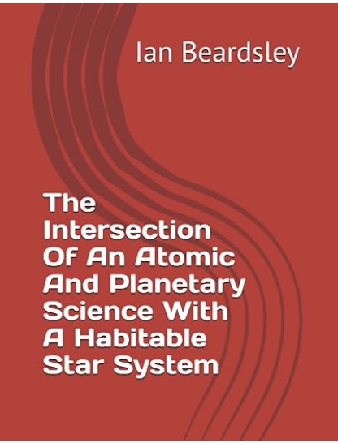
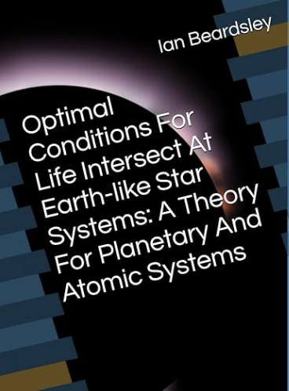
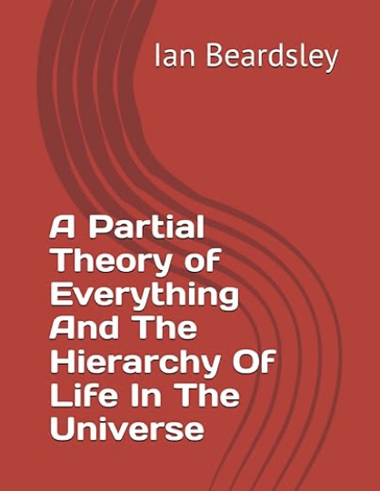

Contact
Contact
Contact: eanbardsley@gmail.com
Click Here To Buy The Intersection Of An Atomic And Planetary Science With A Habitable Star System
The rudiments for a theory of planetary and atomic systems bridging macro-scales (planetary systems) with micro-scales (the atom’s proton) is achieved through a wave equation solution of our Solar System that is used to describe atoms in quantum mechanics. We find the base unit of time, the characteristic time, in the solution for our Solar System and the atom comes out to be the base unit of time developed since ancient times by the ancient Sumerians and Babylonians of one second. Applying this theory to multiple star systems reveals that the optimal conditions for life may be intersecting at Earth-like star systems. It is suggested that stars that host planets that are good hosts for intelligent life to develop begins at around spectral class F stars to spectral class K stars on the main sequence with the optimal conditions intersecting between these two around spectral class G stars in the area of our star, the Sun. Moons of planets are shown to play a key role in the wave solution for the star systems and turn out to define their ground state if they are habitable. Our moon plays a primary role in allowing for life on the Earth, stabilizing its orbit allowing for the seasons. It may be the conditions for complex life maximize during the epoch where a moon perfectly eclipses the star it orbits as seen from the habitable planet which determines some forms of the equations that give the characteristic time of the star system at or around 1 second. The characteristic time of 1 second common to the Solar System and atomic systems appears to be characteristic, as well, of hydrocarbons the skeletons of life chemistry in a context of sixfold symmetry. An in depth look at the moon eclipsing the Sun as seen from the Earth over geologic times is given. We conclude with section 12.0 where we present the ideal method for modeling habitable star systems with our theory. We conclude that the intersection of an atomic and planetary science happens with habitable systems like the one that belongs to our Sun, so-called G2V star systems, and in F star systems around there, around F8V, which may be closer and better for life. This seems to happen in a star system where there are perfect eclipses of the star by the moon.
 "The rudiments for a theory of planetary and atomic systems bridging macro-scales (planetary systems) with micro-scales (the atom’s proton) is achieved through a wave equation solution of our Solar System that is used to describe atoms in quantum mechanics. We find the base unit of time, the characteristic time, in the solution for our Solar System and the atom comes out to be the base unit of time developed since ancient times by the ancient Sumerians and Babylonians of one second. Applying this theory to multiple star systems reveals that the optimal conditions for life may be intersecting at Earth-like star systems. It is suggested that stars that host planets that are good hosts for intelligent life to develop begins at around spectral class F stars to spectral class K stars on the main sequence with the optimal conditions intersecting between these two around spectral class G stars in the area of our star, the Sun. Moons of planets are shown to play a key role in the wave solution for the star systems and turn out to define their ground state. Our moon plays a primary role in allowing for life on the Earth, stabilizing its orbit allowing for the seasons. It may be the conditions for complex life maximize during the epoch where a moon perfectly eclipses the star it orbits as seen from the habitable planet which determines some forms of the equations that give the characteristic time of the star system at or around 1 second. The characteristic time of 1 second common to the Solar System and atomic systems appears to be characteristic, as well, of hydrocarbons the skeletons of life chemistry in a context of sixfold symmetry."******************************************************************************************
Click Here To Buy A Partial Theory of Everything And The Hierarchy Of Life In The Universe
Click Here To Buy Life As A Natural Property of the Universe in linen wrap hardcover